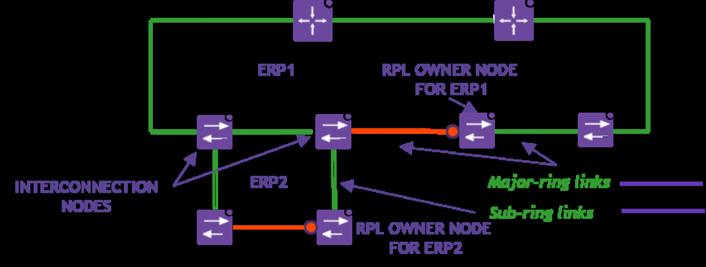
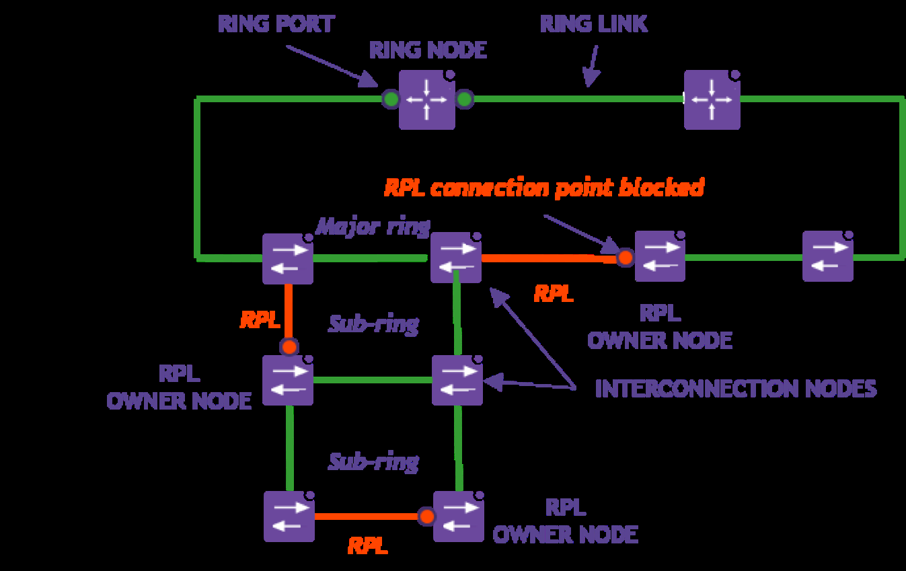
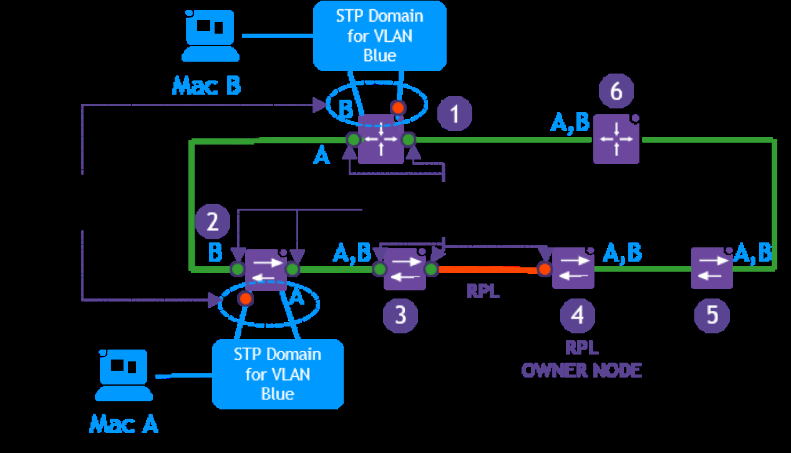
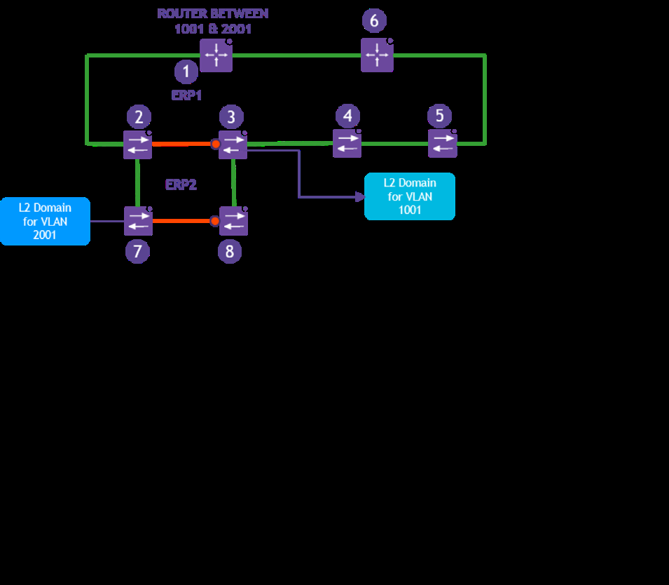
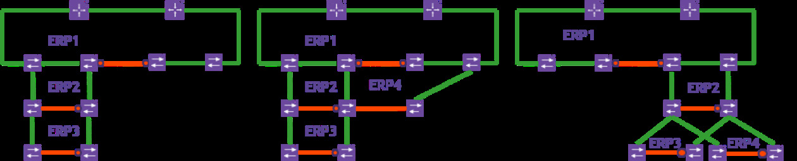

sol-erp-multi-ring-design
R（触发场景）
- 接入/汇聚层多节点需要接入核心环，比较 STP、DHL、multi-ring 方案
- 设计 major ring + sub-ring：RPL 位置、ERP 实例划分、互联节点端口归属
- 子环跨互联节点共享链路时配置 R-APS Virtual Channel
- ERP 域与既有 STP 域共存、802.1ad VLAN stacking 场景
- 核对哪些端口/产品可跑 ERP
I（核心理念）
- 接入接环首选 multi-ring + ERP v2（P15，<<
>>）：支持多节点接入与光纤受限场景；STP 收敛慢且可能引发不稳定，DHL 只适用单节点接入。 - 多环设计守"三原则"（P13，<<
>>）：R-APS 协议不跨环共享；每端口只受一个环控制（R-APS 与被保护 VLAN）；每环独立 RPL。 - 子环跨共享链路必须用 R-APS Virtual Channel（P14，<<
>>）——共享链路本身归 major ring 管。 - ERP 口自动禁 STP，防环责任分域（P16，<<
>>）。


A1（行动框架）
- 接入/汇聚接环选型框架（F1，<<
>>）：STP/RSTP/MSTP（不推荐）vs DHL（仅单节点、按 VLAN 改转发状态）vs multi-ring + ERP v2（推荐）；判定变量 = 接入节点数量、光纤资源、冗余要求 - 多环设计规则框架（F4，<<
>>）：每环独立 ERP 实例与 RPL（不同链路）→ 互联节点可跑多实例但每端口单环 → 子环经共享链路用 virtual channel（多子环不同 VLAN）→ 互联链路归 major ring 管；AOS 亦允许子环不用 VC（R-APS 在互联节点终结）
A2（操作步骤）
- 多环实例划分（C8，<<
>>）：major + sub-ring 各起一个 ERP 实例，两条不同链路分别作 RPL - Virtual Channel 配置（C9/P14，<<
>>）：多子环共用互联节点间链路时，为每个 R-APS virtual channel 分配不同 VLAN - ERP 与 STP 共存（P16/X16，<<
>>）：ERP 口自动禁 STP；非环口 STP 照跑，但 BPDUs 仍可能经环口泛洪，注意域边界 - STP 域冗余改造（C12/X15，<<
>>）：STP 域挂单节点故障即全网断连 VLAN，改用 ERP sub-ring 补全网冗余 - 端口资格核对（P20/X17，<<
>>）：NNI 可配为 ERP 口保护 SVLAN；UNI 不能作 ERP 环口；802.1ad VLAN stacking 网络可跑 ERP - 弹性增强（C11/P19，<<
>>）：环链路用 LACP 多光纤捆绑到 VC 不同物理节点、接入双归 VC 节点——但收敛时间增加，需权衡 - 产品选型（C14，<<
>>）：9900/6900 核心到 6865/6465T 室外严苛环境全系支持 ERPv2 - 配置拓扑参考（C13，<<
>>）：major ring ERP#1 + sub-ring ERP#2，用户 VLAN 域 1001 接在节点 #3（同时是 major ring RPL Owner）



E（实证案例）
- 多环设计实例：双 ERP 实例、两条不同 RPL（C8，<<
>>） - 多子环共用链路的 virtual channel VLAN 区分（C9，<<
>>） - VC+LACP 弹性部署：环链路捆绑 + 接入双归（C11，<<
>>） - ERP+STP 分域协作与节点 2 故障断域失效场景（C12，<<
>>） - 附录配置拓扑：major ERP#1 + sub-ring ERP#2 + VLAN 1001（C13，<<
>>）
B（反例与坑）
- STP 不推荐：收敛慢、可能不稳定；STP 域挂单节点故障全网断连（X8/X15，<<
>>） - BPDUs 仍会经 ERP 环口泛洪，勿以为 ERP 能完全隔离 STP（X16，<<
>>） - DHL 不适用多节点接入层、光纤受限场景（X9，<<
>>） - 违反多环三原则的后果：R-APS 串环、双 RPL 冲突（X10/P13，<<
>>） - VC 与 ERP 叠加增加收敛时间（控制面复杂化 + FDB flush 同步）（X14/P19，<<
>>） - MPLS FRR 同样不是端到端 50ms，勿类比套用（X13，<<
>>） - UNI 口误用作 ERP 口（X17/P20，<<
>>）
来源：Ethernet Ring Protection Switching Application Note（Interconnected rings + 协议交互 + Portfolio，p13-17）
仅供内部学习使用 · 教材版权归 ALE Training Services 所有